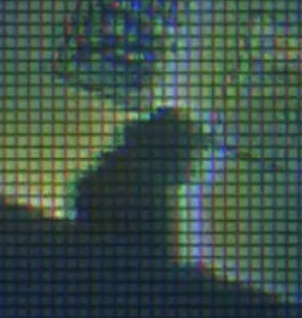
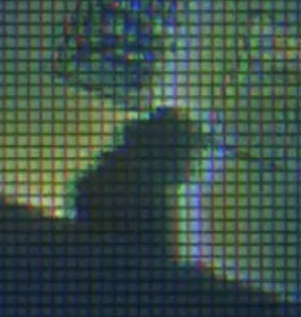

"CM29" PINTV Trial Participant Kogan's Mother
Personality
Not much is known about Cassandra. Kogan describes her as a "distant concept" in his life.
History
A woman with schizophrenia, in the care of the Pandora Institute. On September 3rd, 1991, she reports to her psychiatrist that she has seen a faerie, but insists that it was not a hallucination. It spoke to her.
She was institutionalized when Kogan was young. After her death, all of her worldly possessions kept at the institute could fit into a small box. The rest was in a storage unit.
Facts & Important Information
- Enjoyed making pottery.
 

"CM29"
Also Known As
Cassandra
Ms. Mendez
Appearance
Hair: ???
Height: ???
Build: ???
Age
???
Key Items
- ???